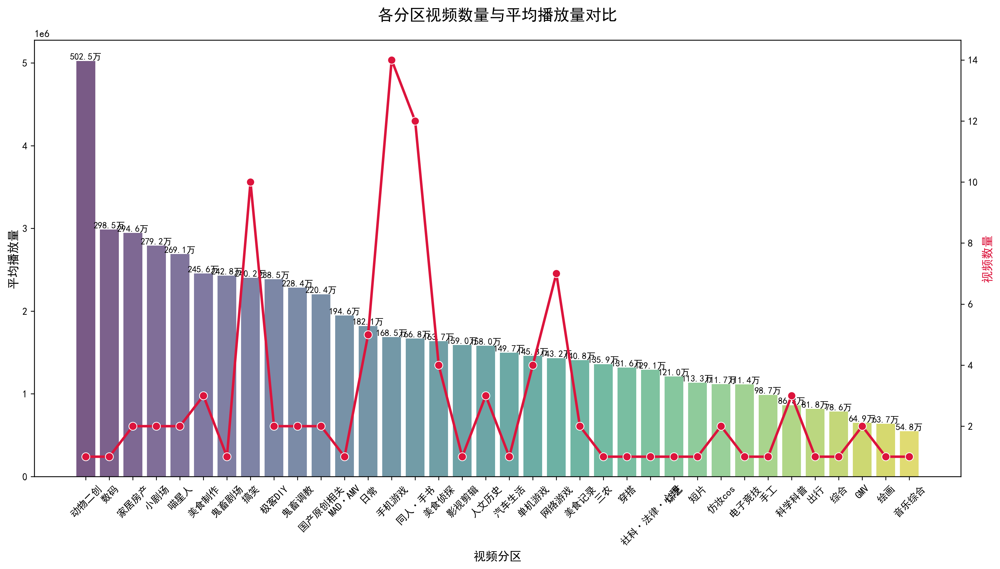
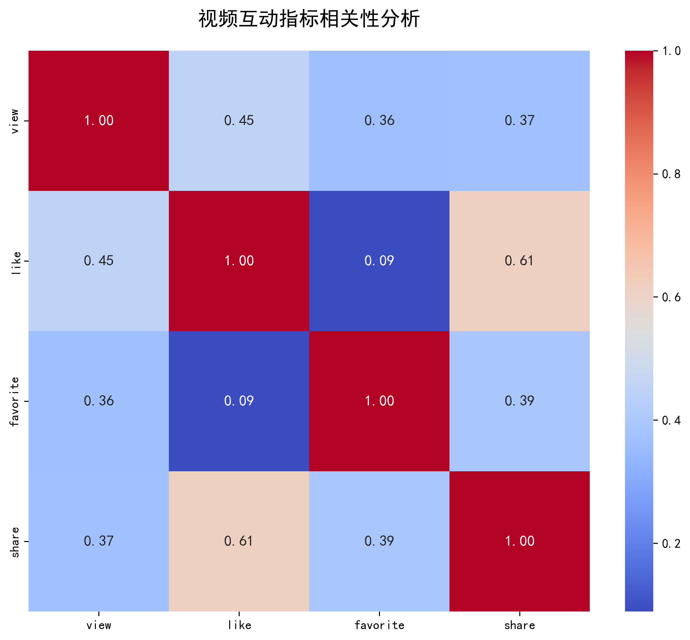
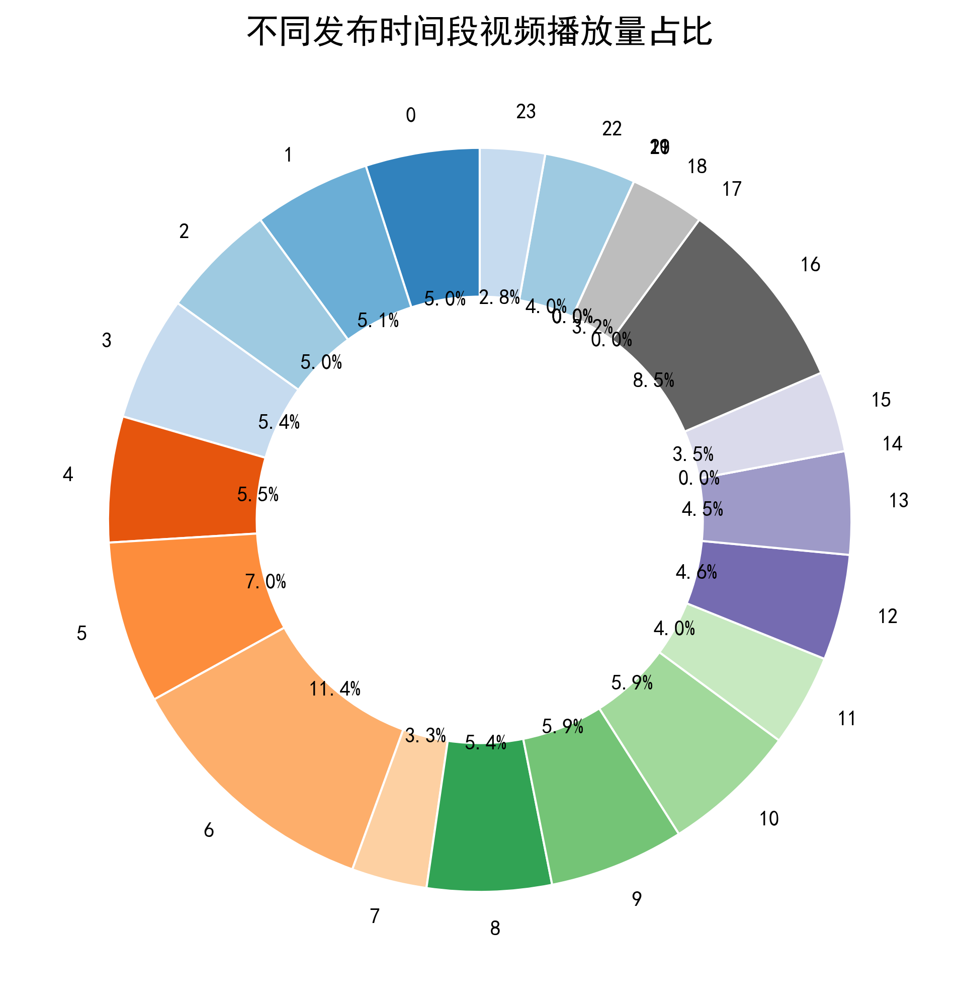
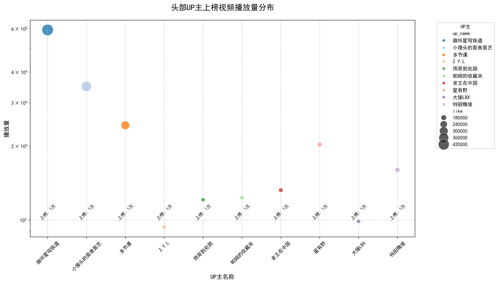
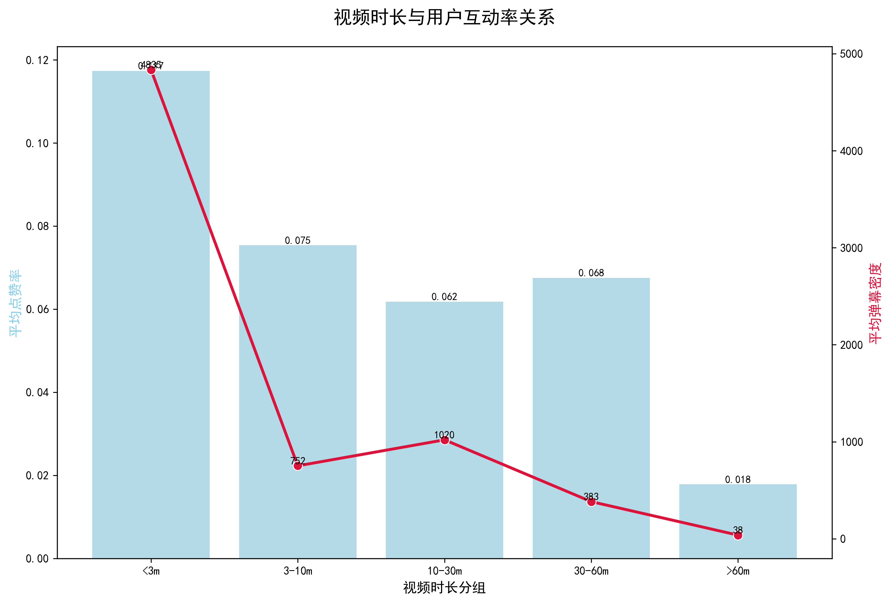

<!DOCTYPE html>
<html lang="zh-CN">
<head>
<meta charset="UTF-8" />
<meta name="viewport" content="width=device-width, initial-scale=1.0" />
<title>B站热门视频数据可视化报告</title>
<style>
/* 全局变量定义 */
:root {
  --pink: #FF85A2;      /* 调整为更柔和的粉色 */
  --blue: #40A9FF;       /* 调整为更柔和的蓝色 */
  --bg-img: url('bg1.jpg');
  --glass-bg: rgba(255,255,255,0.1);  /* 毛玻璃背景透明度 */
  --card-padding: 2.5rem;
}

/* 基础重置与布局 */
* {
  margin: 0; 
  padding: 0; 
  box-sizing: border-box;
}

body {
  font-family: "Microsoft YaHei", "PingFang SC", sans-serif;
  background: var(--bg-img) no-repeat center/cover fixed;
  color: #FFFFFF;
  line-height: 1.8;
  min-height: 100vh;
  display: flex;
  flex-direction: column;
}

/* 导航栏设计 */
nav {
  position: fixed;
  top: 0;
  left: 0;
  width: 100%;
  background: rgba(0,0,0,0.7);
  padding: 1.2rem 2rem;
  box-shadow: 0 4px 20px rgba(0,0,0,0.3);
  z-index: 999;
  backdrop-filter: blur(8px);
}

.nav-menu {
  list-style: none;
  display: flex;
  justify-content: center;
  gap: 1.5rem;
  flex-wrap: wrap;
}

.nav-menu a {
  color: #FFF;
  text-decoration: none;
  font-size: 1.1rem;
  padding: 0.6rem 1.2rem;
  border-radius: 25px;
  transition: all 0.3s ease;
  position: relative;
}

.nav-menu a:hover {
  background: rgba(255,255,255,0.1);
  transform: translateY(-2px);
}

/* 主容器 */
.main-container {
  margin-top: 80px;
  padding: 3rem 15%;  /* 左右留出空白，优化视觉比例 */
  flex: 1;
  display: flex;
  flex-direction: column;
  gap: 4rem;
}

/* section模块设计 */
.section-card {
  background: var(--glass-bg);
  border-radius: 20px;
  padding: var(--card-padding);
  backdrop-filter: blur(15px);
  transition: transform 0.4s cubic-bezier(0.2, 0.8, 0.2, 1), 
              box-shadow 0.4s ease;
  border: 1px solid rgba(255,255,255,0.1);
  box-shadow: 0 10px 30px rgba(0,0,0,0.2);
}

.section-card:hover {
  transform: translateY(-6px);
  box-shadow: 0 15px 35px rgba(0,0,0,0.3);
}

/* 标题设计 */
.section-title {
  font-size: 1.8rem;
  color: var(--pink);
  text-align: center;
  margin-bottom: 1.5rem;
  padding-bottom: 0.8rem;
  position: relative;
}

.section-title::after {
  content: '';
  position: absolute;
  width: 80px;
  height: 3px;
  background: var(--blue);
  bottom: 0;
  left: 50%;
  transform: translateX(-50%);
  border-radius: 3px;
}

/* 图片设计 */
.chart-container {
  margin: 2rem 0;
  text-align: center;
}

.chart-img {
  max-width: 90%;  /* 限制图片宽度，避免铺满整个卡片 */
  height: auto;
  border-radius: 15px;
  transition: transform 0.5s cubic-bezier(0.175, 0.885, 0.32, 1.275);
  box-shadow: 0 8px 25px rgba(0,0,0,0.25);
}

.chart-img:hover {
  transform: scale(1.04);
}

/* 解说文字 */
.section-desc {
  text-align: center;  /* 居中显示解说文字 */
  font-size: 1.05rem;
  color: rgba(255,255,255,0.9);
  max-width: 85%;      /* 限制文字宽度，提升可读性 */
  margin: 0 auto;
}

/* 页脚设计 */
footer {
  background: rgba(0,0,0,0.6);
  backdrop-filter: blur(10px);
  padding: 2rem 0;
  text-align: center;
  margin-top: 4rem;
  border-top: 1px solid rgba(255,255,255,0.1);
}

.footer-content {
  max-width: 1200px;
  margin: 0 auto;
  display: flex;
  flex-direction: column;
  gap: 1rem;
}

.footer-logo {
  font-size: 1.5rem;
  color: var(--pink);
  font-weight: bold;
}

.footer-links {
  display: flex;
  justify-content: center;
  gap: 1.5rem;
  margin: 1rem 0;
}

.footer-links a {
  color: rgba(255,255,255,0.7);
  text-decoration: none;
  transition: color 0.3s;
}

.footer-links a:hover {
  color: var(--pink);
}

.footer-copyright {
  color: rgba(255,255,255,0.5);
  font-size: 0.9rem;
}

/* 滚动动画 */
@keyframes slideIn {
  from { 
    opacity: 0; 
    transform: translateY(40px); 
  }
  to { 
    opacity: 1; 
    transform: translateY(0); 
  }
}

.animate-on-scroll {
  opacity: 0;
  animation-fill-mode: forwards;
}

/* 响应式设计 */
@media (max-width: 1200px) {
  .main-container {
    padding: 3rem 10%;
  }
}

@media (max-width: 768px) {
  .nav-menu {
    gap: 0.8rem;
  }
  
  .nav-menu a {
    font-size: 0.95rem;
    padding: 0.5rem 1rem;
  }
  
  .main-container {
    margin-top: 120px;
    padding: 2rem 5%;
    gap: 3rem;
  }
  
  .section-card {
    padding: 1.8rem;
  }
  
  .section-title {
    font-size: 1.5rem;
  }
  
  .chart-img {
    max-width: 100%;
  }
  
  .section-desc {
    max-width: 100%;
    font-size: 1rem;
  }
}
</script>
</head>

<body>
<!-- 导航栏 -->
<nav>
  <ul class="nav-menu">
    <li><a href="#overview">项目概览</a></li>
    <li><a href="#chart1">分区对比</a></li>
    <li><a href="#chart2">互动分析</a></li>
    <li><a href="#chart3">时间分布</a></li>
    <li><a href="#chart4">UP主洞察</a></li>
    <li><a href="#chart5">时长互动</a></li>
    <li><a href="#chart6">词云解析</a></li>
  </ul>
</nav>

<!-- 主内容容器 -->
<div class="main-container">
  <!-- 项目介绍 -->
  <section id="overview" class="section-card animate-on-scroll">
    <h2 class="section-title">项目背景与价值</h2>
    <p class="section-desc">本研究通过爬取B站全站热门视频数据（N>1000），从内容分区、互动指标、发布时间、头部创作者等维度，结合数据清洗与可视化分析，揭示平台热门内容的传播规律：</p>
    <div class="section-desc" style="margin-top:1rem;">
      <ul style="display:inline-block; text-align:left;">
        <li>✅ 发现「崩坏星穹铁道」等IP内容的流量爆发力</li>
        <li>✅ 验证短时长内容的互动优势与长视频的专业门槛</li>
        <li>✅ 挖掘18-22点黄金发布时段与深夜流量蓝海</li>
      </ul>
    </div>
  </section>

  <!-- 图表1：分区对比 -->
  <section id="chart1" class="section-card animate-on-scroll">
    <h2 class="section-title">各分区视频数量 vs 平均播放量</h2>
    <div class="chart-container">
      
    </div>
    <p class="section-desc">核心结论：动画区视频基数最大（502.5万），游戏区（如崩坏星穹铁道）单视频播放量碾压级领先，鬼畜区凭借创意实现播放量与内容数双高。</p>
  </section>

  <!-- 图表2：互动相关性 -->
  <section id="chart2" class="section-card animate-on-scroll">
    <h2 class="section-title">播放/点赞/收藏/分享相关性</h2>
    <div class="chart-container">
      
    </div>
    <p class="section-desc">关键发现：<strong>点赞与分享强相关（0.61）</strong>，说明优质内容的互动行为具有传导性；播放量与收藏弱相关（0.36），反映用户收藏决策更谨慎。</p>
  </section>

  <!-- 图表3：时间分布 -->
  <section id="chart3" class="section-card animate-on-scroll">
    <h2 class="section-title">发布时段播放量占比</h2>
    <div class="chart-container">
      
    </div>
    <p class="section-desc">流量规律：18-22点占比超35%（晚高峰红利），6-8点（早通勤）与22-0点（深夜漫游）分别形成次高峰与长尾流量。</p>
  </section>

  <!-- 图表4：头部UP主 -->
  <section id="chart4" class="section-card animate-on-scroll">
    <h2 class="section-title">头部UP主爆款视频分布</h2>
    <div class="chart-container">
      
    </div>
    <p class="section-desc">IP效应：「崩坏星穹铁道」相关UP主单视频播放量突破60万，垂直领域创作者（如美食、手工）依赖持续产出维持热度。</p>
  </section>

  <!-- 图表5：时长与互动 -->
  <section id="chart5" class="section-card animate-on-scroll">
    <h2 class="section-title">视频时长 vs 互动率</h2>
    <div class="chart-container">
      
    </div>
    <p class="section-desc">时长悖论：<3分钟视频点赞率达11.8%（互动峰值），30-60分钟内容弹幕密度更稳定，>60分钟需极强专业性支撑互动。</p>
  </section>

  <!-- 图表6：词云分析 -->
  <section id="chart6" class="section-card animate-on-scroll">
    <h2 class="section-title">热门视频标签词云</h2>
    <div class="chart-container">
      
    </div>
    <p class="section-desc">内容趋势：「搞笑」「生活记录」「崩坏星穹铁道」成核心标签，反映娱乐化、IP化、生活化的创作主流。</p>
  </section>
</div>

<!-- 页脚 -->
<footer>
  <div class="footer-content">
    <div class="footer-logo">B站热门视频研究</div>
    <div class="footer-links">
      <a href="#">数据来源</a>
      <a href="#">研究方法</a>
      <a href="#">联系我们</a>
    </div>
    <div class="footer-copyright">
      © 2025 B站数据分析项目 | 本报告仅供学习交流使用
    </div>
  </div>
</footer>

<script>
// 滚动动画触发
const observer = new IntersectionObserver((entries) => {
  entries.forEach(entry => {
    if (entry.isIntersecting) {
      entry.target.style.animation = "slideIn 0.7s ease-out forwards";
      observer.unobserve(entry.target);
    }
  });
}, {
  rootMargin: "0px 0px -150px 0px"
});

document.querySelectorAll('.animate-on-scroll').forEach(el => {
  observer.observe(el);
});

// 导航平滑滚动
document.querySelectorAll('nav a').forEach(link => {
  link.addEventListener('click', (e) => {
    e.preventDefault();
    const target = document.querySelector(e.target.hash);
    target.scrollIntoView({ 
      behavior: 'smooth',
      block: 'start'
    });
  });
});

// 为卡片添加随机延迟动画，增强层次感
document.querySelectorAll('.section-card').forEach((card, index) => {
  card.style.animationDelay = `${index * 0.1}s`;
});
</script>
</body>
</html>
